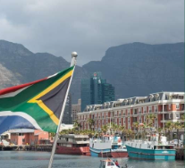
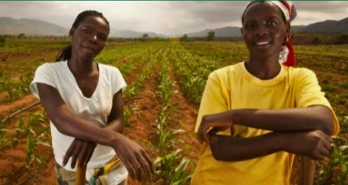

Economia
A diversidade
A economia da África do Sul é uma das mais desenvolvidas e influentes do continente africano. O país se destaca pela diversidade de setores produtivos, que vão da mineração e indústria até o turismo e a agricultura. A África do Sul é uma das maiores produtoras mundiais de ouro, diamantes e platina, recursos que sempre tiveram grande importância em sua história econômica.
Além da mineração, o país possui um setor industrial moderno, com destaque para a produção de automóveis, alimentos e produtos químicos. A agricultura também é fundamental, com plantações de milho, frutas e vinhos reconhecidos internacionalmente. Nos últimos anos, o turismo tem ganhado grande destaque, atraindo milhões de visitantes para cidades como Cidade do Cabo e Joanesburgo, além de parques nacionais e reservas naturais. Apesar dos desafios sociais e das desigualdades, a África do Sul continua sendo um dos principais centros econômicos e comerciais da África, com um grande potencial de crescimento sustentável.
